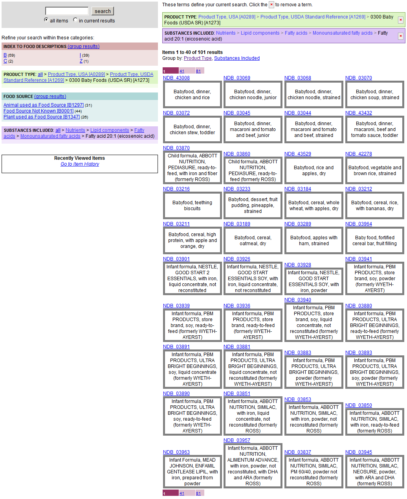
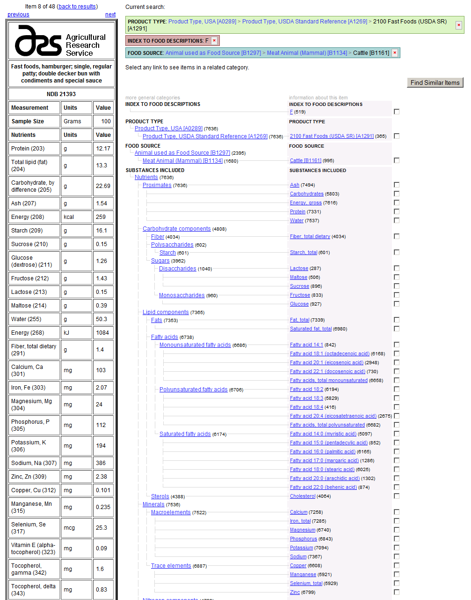
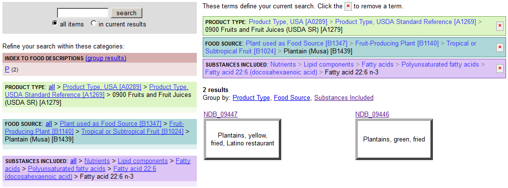

USDA Standard Reference (SR)
¶
Intro text here
Table of Contents
¶
Baby food
Two All Beef Patties, Special Sauce …
Omega 3 Fatty Acids from Vegetables
Baby food
¶

Two All Beef Patties, Special Sauce …
¶

Omega 3 Fatty Acids from Vegetables
¶

Sphinx
Navigation
Related Topics
Documentation overview
Quick search